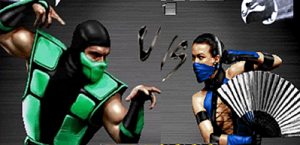

БОЙ РАВНОЗНАЧНЫХ СЕЛЕКТОРОВ
HTML-код:
CSS-код:
Здесь всё просто. Побеждает тот селектор,
что находится ниже в коде таблицы CSS.
!!! Побеждает селектор "Sub-zero" !!!>
== Вернуться в главное меню ==
CЕЛЕКТОР КЛАССА VS СЕЛЕКТОР ТЕГА
HTML-код:
CSS-код:
Селектор класса приоритетнее селектора тега!
!!! Побеждает селектор "Sonya" !!!
== Вернуться в главное меню ==
CЕЛЕКТОР КЛАССА VS СЕЛЕКТОР КЛАССА С УТОЧНЕНИЕМ
HTML-код:
CSS-код:
имеет приоритет над селектором с тем же классом без уточнения.
!!! Побеждает селектор "Kano"!!!
== Вернуться в главное меню ==
СЕЛЕКТОР КЛАССА VS СЕЛЕКТОР С СОВМЕЩЁННЫМИ КЛАССАМИ
HTML-код:
CSS-код:
Селектор с совмещёнными классами имеет приоритет
над обычными селекторами класса!
!!! Побеждает селектор "Reptile"!!!
== Вернуться в главное меню ==
СЕЛЕКТОР С СОВМЕЩЁННЫМИ КЛАССАМИ VS СЕЛЕКТОР ИДЕНТИФИКАТОРА
HTML-код:

CSS-код:
над всеми другими селекторами таблицы CSS!
!!! Побеждает селектор "Shang Tsung"!!!

== Вернуться в главное меню ==
ГЛАВНЫЙ БОСС VS СЕЛЕКТОР ИДЕНТИФИКАТОРА
HTML-код:
CSS-код:
Главный босс - это стиль, встроенный в тег кода HTML!
Этому боссу не может противостоять
ни один селектор
таблицы СSS, даже селектор идентификатора!
!!! Побеждает "Shao Kahn" !!!

== Вернуться в главное меню ==
История.
Однажды Старший Бог Земного Царства Шиннок обезумел от власти. Он выступил против своих собратьев и решил, что жители Земного Царства должны поклоняться только ему. Однако бог низшего ранга, Райден, смог его победить и запечатать в Преисподней. Тогда Шиннок объединился с таинственным странствующим колдуном Куан Чином и вдвоем они подчинили себе этот проклятый мир. Бесчисленные годы Шиннок ждал возможности вернуться в Земное Царство и отомстить.
Битва богов была такой яростной, что разорвала планету и вызвала разломы в реальности. Через эти разломы раса Заурианов (людей-рептилий, эволюционировавших из динозавров) смогла спастись бегством и найти безопасный дом в мире Затерра. Все верно, гнев Шиннока убил динозавров.
В мире под названием Эдения богу и защитнику Аргус стали являться видения масштабной битвы, которая однажды вызовет армагеддон во всех мирах. Вместе со своей женой, волшебницей Делией, он решил погрузить своих сыновей Тейвена и Дейгона в сон. План был таков, что однажды они проснутся и отправятся на поиски особого оружия, убьют элементаля Блейза и это поможет им одолеть всех воинов в той самой масштабной битве. Сын, который победит в бою, займет место Аргуса в роли защитника Эдении.
Тем временем Внешним миром правил Король Драконов Онага. Он не только обладал невероятной силой, но и командовал неудержимой армией. Но однажды его предал его советник Шао Кан — он отравил Онагу и занял его место. Армия Онаги отказалась подчиниться Шао Кану — и воины мумифицировали себя, чтобы вернуться под командование Онаги, когда его воскресят.
Шао Кана это не остановило — он завоевал множество миров, включая Затерру. Вновь и вновь его чемпионы побеждали в Смертельной Битве и его мир сливался с бесчисленным количеством других. Вскоре присоединилась и Эдения. Шао Кан убил правителя этого мира Короля Джеррода и забрал его жену и дочь. Однако королева Синдел не захотела жить с Шао Каном и наложила на себя руки. Тогда Шао Кан решил вырастить маленькую Китану и превратить ее в идеальную убийцу.
Шао Кан завоевал народ воинов Ош-Текк. Их правитель Котал Кетц подчинился завоевателю, но в тайне отправил своего сына в Земное Царство . Там он нашел цивилизацию майя и стал для них богом войны и жертвоприношений. Однако со временем его племя вымерло и он вернулся во Внешний Мир.Чтобы уберечь Внешний Мир от завоевания Райден открыл секту шаолиньских монахов — общество Белого лотоса — где обучались воины для сражений в Смертельной Битве . Величайшим воином был Великий Кунг Лао — он победил Шан Цзуна, колдуна на службе Шао Кана. Однако позже он пал от рук Горо — четырехрукого получеловека-полудракона.
Горо веками был чемпионом турниров и Шан Цзун видел в нем угрозу. Перед его последним турниром он нанял стрелка Эррона Блэка , чтобы тот убил Горо. За выполнение заказа Блэку открылся секрет долголетия и он фактически стал бессмертным...
Список персонажей игры:
- Liu Kang
- Sub-zero
-
Kano
Scorpion
Reptile
- Kitana
-
Sonya
Shao Kahn
Shang Tsung
и другие...